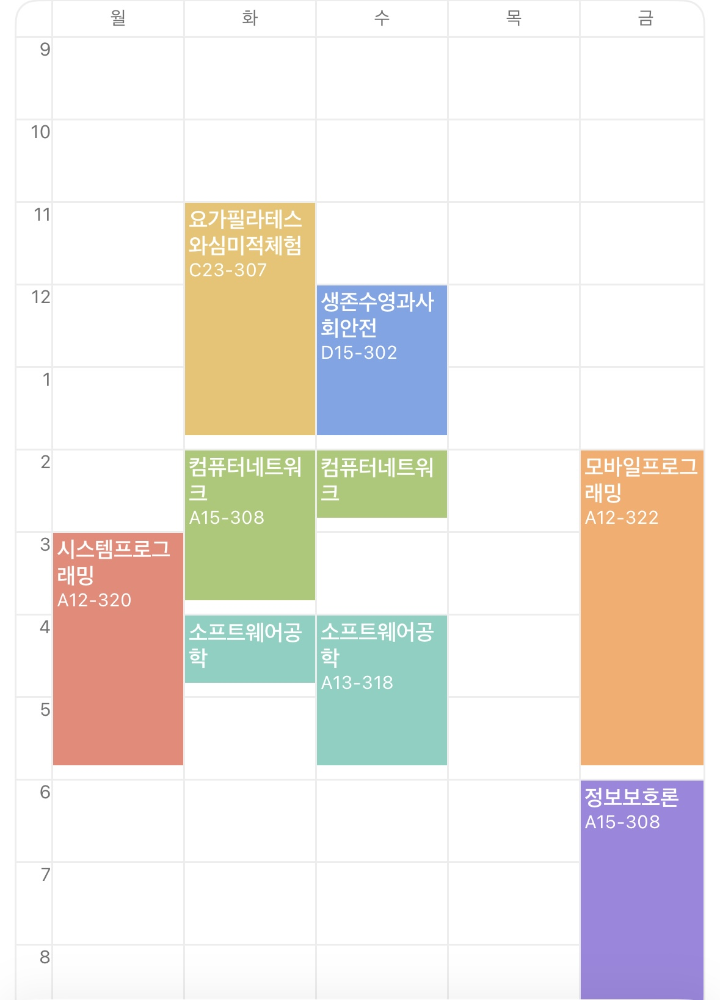

2025년도 2학기 시간표
-
학교수업 공부하기
학교 시간표에따라 수업을 열심히 듣고 중간, 기말고사를 잘 치자. 학교 수업이 기본이고 좋은 학점을 목표로 열심히 공부하자.
-
프론트엔드 공부하기
이번에 GDGOC라는 동아리에 비기너로 합류하게 되었다. 프론트엔드 개발 공부라고는 학교 수업을 제외하고는 해 본 적도 없는 나에게 과제를 부여해주고 관련 지식을 친절하게 알려주는 좋은 동아리다. 이번 기회에 열심히 공부하고 성장해서 남들과 협업하는 기회를 꼭 갖도록 하자.
-
JLPT 공부하기
2025년 12월 7일에 있을 JLPT 시험 N2급수에 접수를 해 두었다. 아직 확정은 아니지만 일본 회사에 취직하여 일본에서 사는것은 내 꿈중 하나이다. 학교 수업 공부나 프론트엔드 공부는 주로 평일에 하니까, 금토일 주말 알바하는 시간 외에 최대한 공부하여 합격할 수 있도록 하자.
-
운동 열심히하기
모든 자기개발의 근원은 운동! 신체가 건강해야 무엇이든 하는 의미가 있고, 운동을 하면 단순히 몸을 갈고 닦는 것에서 끝나지 않고 더 멋진 사람이 되기위한 욕망을 키워준다. 뉴피트니스의 자랑스러운 아틀란티스 머신과 함께 열심히 단련하자.